一、cobbler简介：
cobbler
功能：用来快速建立 Linux 网络安装环境
特性：
1.基于PXE的二次封装，将多种安装参数封装到一个菜单，更加方便，自动化
2.Python编写
3.支持UEFI+GPT
cobbler工作流程：
1.client裸机配置了从网络启动后，开机后会广播包请求DHCP服务器（cobbler server）
发送其分配好的一个IP
2.DHCP服务器（cobbler server）收到请求后发送responese，包括其ip地址
3.client裸机拿到ip后再向cobbler server发送请求OS引导文件的请求
4.cobbler server告诉裸机OS引导文件的名字和TFTP server的ip和port
5.client裸机通过上面告知的TFTP server地址通信，下载引导文件
6.client裸机执行执行该引导文件，确定加载信息，选择要安装的os，期间会再向
cobbler server请求kickstart文件和os image
7.cobbler server发送请求的kickstart和os iamge
8.client裸机加载kickstart文件
9.client裸机接收os image，安装该os image
cobbler介绍：
安装包：
系统默认未安装，需手动安装（epel源）
cobbler服务集成：
PXE
DHCP
rsync
Http
DNS
Kickstart
IPMI 电源管理
检查cobbler环境：
cobbler check
1）指定server地址
2）指定tftp服务器地址
3）需要关闭SELinux
4）使用cobbler get-loaders下载必要文件
5）rsync服务，忽略不做
6）忽略不做
7）要求debian框架下安装debmirror包，忽略不做
8）要求加密口令
9）集群与电源相关
cobbler相关术语：
发行版：
表示一个操作系统版本，它承载了内核和 initrd 的信息，以及内核参数等其他数据
配置文件：
包含一个发行版、一个 kickstart 文件以及可能的存储库，还包含更多特定的内核参
数等其他数据
系统：
表示要配置的主机，它包含一个配置文件或一个镜像，还包含 IP 和 MAC 地址、电源
管理（地址、凭据、类型）以及更为专业的数据等信息
存储库：
保存一个 yum 或 rsync 存储库的镜像信息
镜像：
可替换一个包含不属于此类别的文件的发行版对象（例如，无法分为内核和 initrd 的
对象）
相关配置文件：
配置文件目录 /etc/cobbler
/etc/cobbler/settings : cobbler 主配置文件
/etc/cobbler/iso/: iso模板配置文件
/etc/cobbler/pxe: pxe模板文件
/etc/cobbler/power: 电源配置文件
/etc/cobbler/user.conf: web服务授权配置文件
/etc/cobbler/users.digest: web访问的用户名密码配置文件
/etc/cobbler/dhcp.template : dhcp服务器的的配置末班
/etc/cobbler/dnsmasq.template : dns服务器的配置模板
/etc/cobbler/tftpd.template : tftp服务的配置模板
/etc/cobbler/modules.conf : 模块的配置文件
数据目录
/var/lib/cobbler/config/: 用于存放distros，system，profiles 等信息配置文件
/var/lib/cobbler/triggers/: 用于存放用户定义的cobbler命令
/var/lib/cobbler/kickstart/: 默认存放kickstart文件
/var/lib/cobbler/loaders/: 存放各种引导程序
镜像目录
/var/www/cobbler/ks_mirror/: 导入的发行版系统的所有数据
/var/www/cobbler/images/ : 导入发行版的kernel和initrd镜像用于远程网络启动
/var/www/cobbler/repo_mirror/: yum 仓库存储目录
日志目录
/var/log/cobbler/installing: 客户端安装日志
/var/log/cobbler/cobbler.log : cobbler日志
cobbler命令：
cobbler commands 介绍
cobbler check 核对当前设置是否有问题
cobbler list 列出所有的cobbler元素
cobbler report 列出元素的详细信息
cobbler sync 同步配置到数据目录,更改配置最好都要执行下
cobbler reposync 同步yum仓库
cobbler distro 查看导入的发行版系统信息
cobbler system 查看添加的系统信息
cobbler profile 查看配置信息
二、实验：模拟搭建cobbler服务器，实现cobbler自动化安装系统
1.开启各类服务
systemctl enable cobblerd dhcpd httpd tftp
systemctl start cobblerd httpd tftp
2.检查
cobbler check
3.指定cobbler服务器地址：
养成好习惯，记得备份
vim /etc/cobbler/settings（备份）
server:192.168.30.10 line384
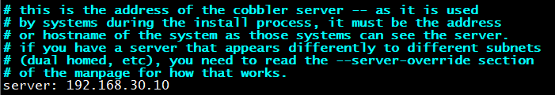
4.重启服务
systemctl restart cobblerd
5.指定tftp服务器
next_server:192.168.30.10 line272
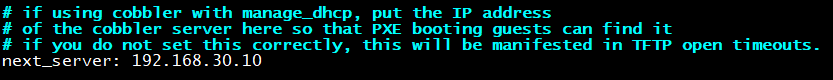
6.关闭SELinux
7.下载必要文件
cobbler get-loaders
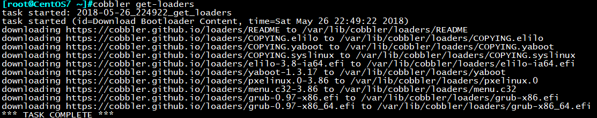
8.同步必要文件到/var/lib/tftpboot目录
cobbler sync
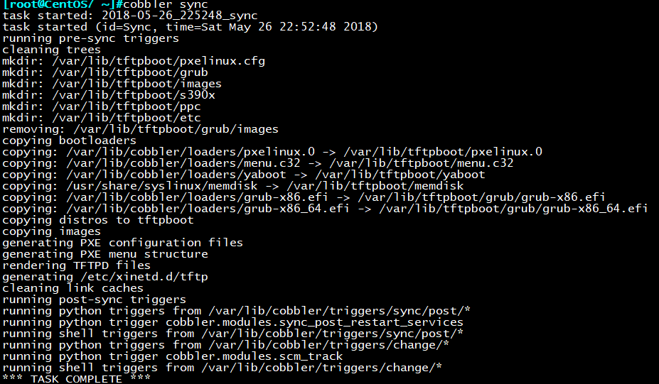
同步后的目录结构如下：
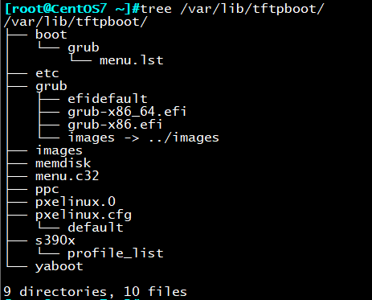
9.加密口令替换setting文件中的默认口令
#openssl passwd -1 交互式生成加密口令
default_password_crytped line101
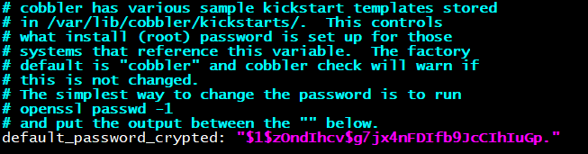
10.使用cobbler自动配置dhcp服务器
manage_dhcp:1 line242
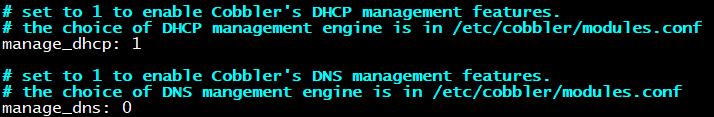
11.重启cobbler服务
systemctl restart cobblerd
12.修改DHCP默认配置文件
vim /etc/cobbler/dhcp.template
subnet 192.168.30.0 netmask 255.255.255.0
range dynamic-bootp 192.168.30.10 192.168.30.200; 按需修改
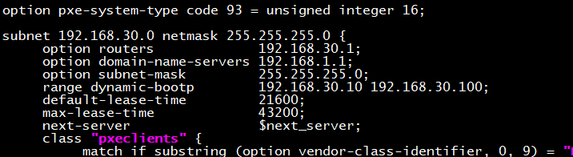
13.同步dhcp设置
cobbler sync
14.确保dhcp服务已启动（67端口）
ss -ntlu
15.重启httpd cobbler服务
systemctl restart httpd cobblerd
16.挂载6,7磁盘
mount /dev/sr0 /mnt/cdrom0
mount /dev/sr1 /mnt/cdrom1
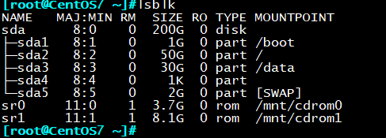
17.光盘导入
cobbler import –path=/mnt/cdrom0/ –name=CentOS-6.9-x86_64 –arch=x86_64
cobbler import –path=/mnt/cdrom1/ –name=CentOS-7.4-x86_64 –arch=x86_64
18.光盘导入完成后会自动生成对应版本最小化安装应答文件
cobbler distro list 列出有几套系统
CentOS-6.9-x86_64
CentOS-7.4-x86_64
cobbler profile list 列出有几套应答文件配置
CentOS-6.9-i386
CentOS-6.9-x86_64
CentOS-7.4-x86_6
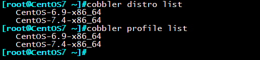
19.可以删除不需要的应答文件
cobbler profile remove –name=CentOS-6.9-i386
cobbler distro remove –name=CentOS-6.9-i386
20.关联自己的应答文件
修改应答文件路径：
vim ks.cfg
url –url=$tree 修改路径（必要）
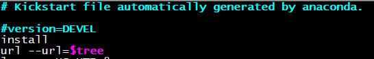
放置对应目录下：
cp ks6_mini.cfg /var/lib/cobbler/kickstarts/
cp ks7_desktop.cfg /var/lib/cobbler/kickstarts/
cobbler profile add –name=CentOS-6.9-x86_64_Mini –distro=CentOS-6.9-x86_64
–kickstart=/var/lib/cobbler/kickstarts/ks6_mini.cfg
cobbler profile add –name=CentOS-7.4-x86_64_Desktop –distro=CentOS-7.4-x86_64
–kickstart=/var/lib/cobbler/kickstarts/ks7_desktop.cfg

21.安装测试，新开一台虚拟机，网卡设置为仅主机
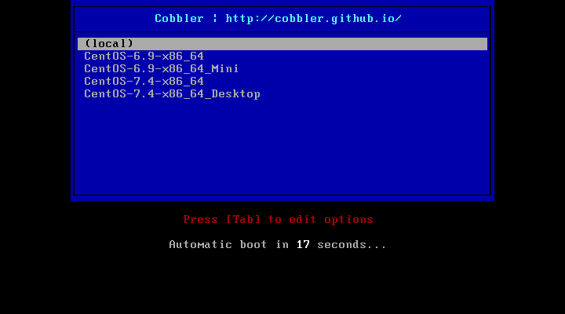
三、实验：实现基于web的cobbler
前期准备：cobbler-web安装包，epel源
服务器：CentOS7:192.168.30.10
1.yum install cobbler-web
2.重启httpd服务
systemctl restart httpd
3.测试cobbler网页
https://192.168.30.10/cobbler_web/
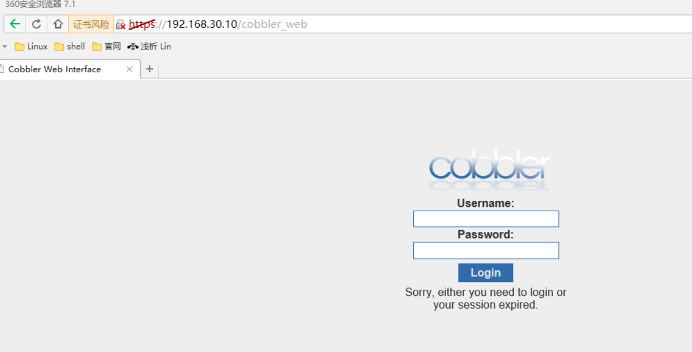
4.添加cobbler管理员账户
/etc/cobbler/modules.conf 定义了管理员账户的添加方式
可以看到默认认证方式定义在/etc/cobbler/users.digest文件中
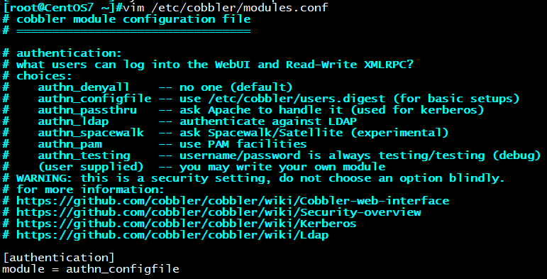
方法一：默认方式
创建用户test1
htdigest -c /etc/cobbler.users.digest Cobbler test1
要求输入口令
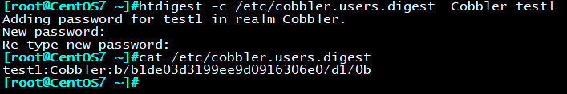
使用test1账户登录：登录成功：
就可以在页面上更改cobbler配置了
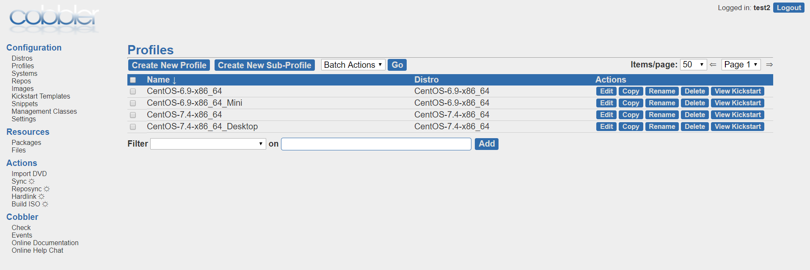
方法二：pam模块验证方法
module = authn_pam
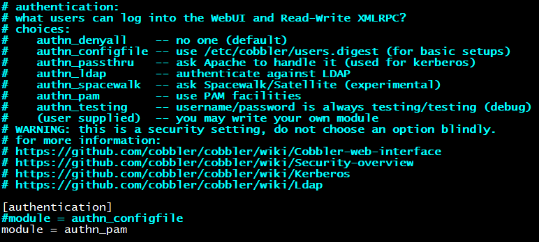
cat /etc/cobbler/users.conf
useradd -s /sbin/nologin test2
echo magedu | passwd –sdtin test2
vim /etc/cobbler/users.conf
[admins]
admin = test2
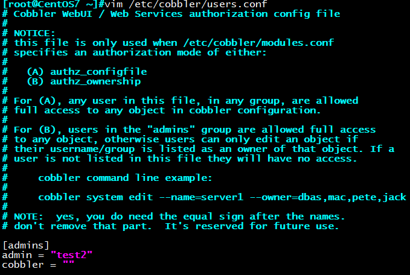
重启cobbler服务
systemctl restart cobblerd
使用test2账户登录：登录成功
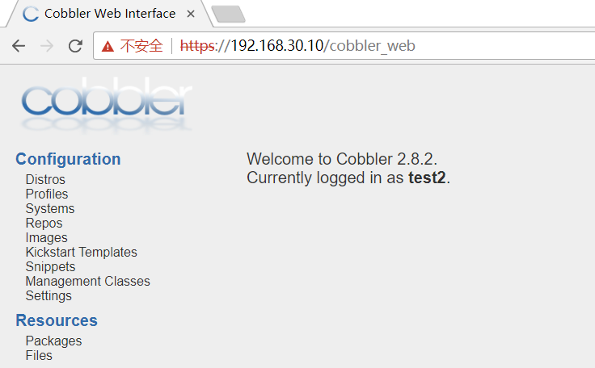